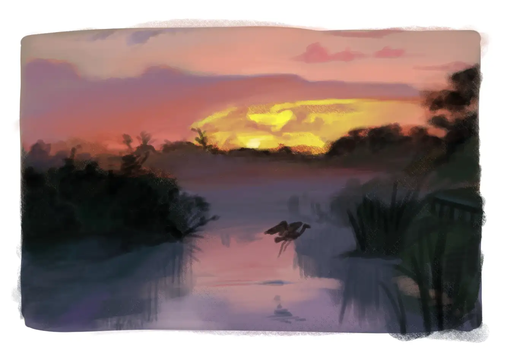
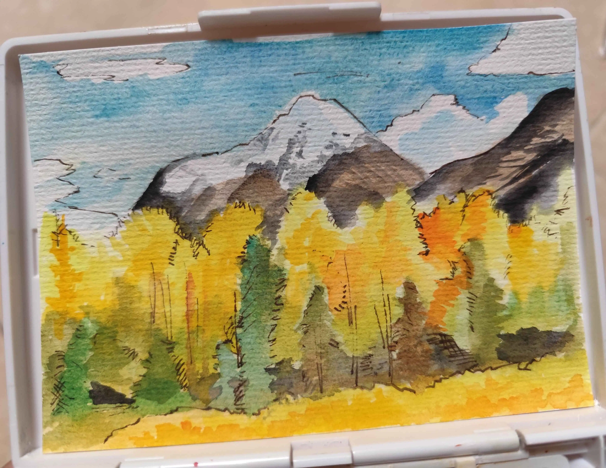
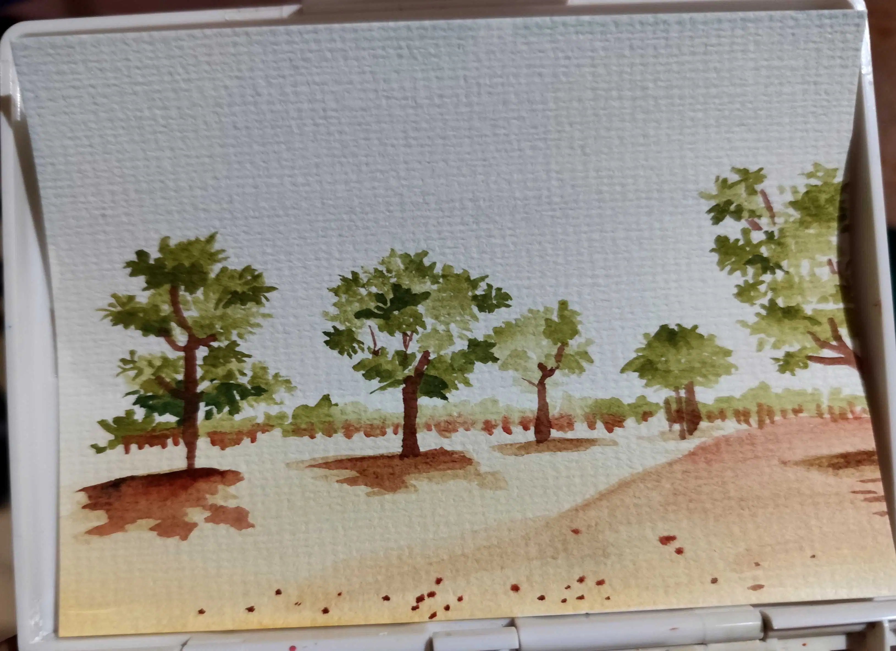
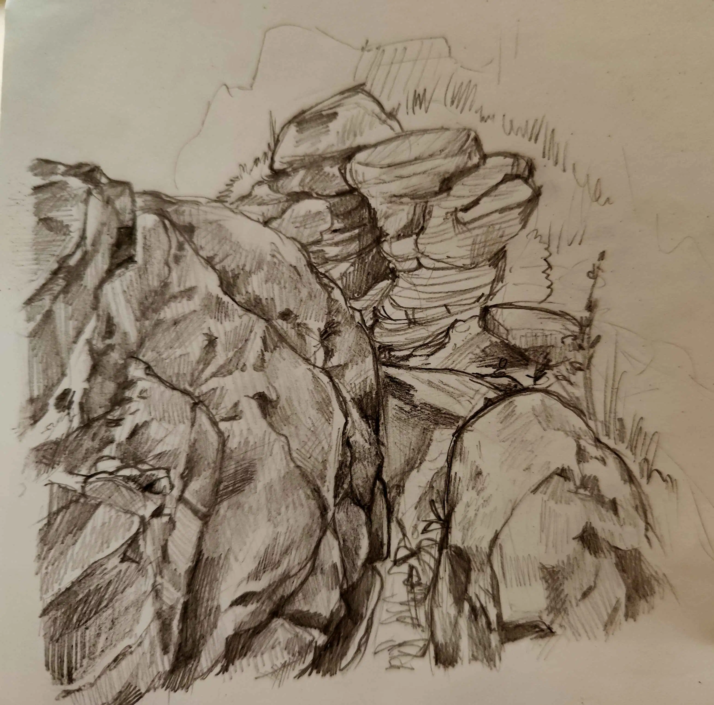

05.04.2026: Continuing March Hotel spirit, I join Plein Airpril. The server provides daily references or challenges related to landscape study. Members don't have to follow both, so I prefer the former. I experiment with different medium, adjusting whether I want to study color/structure/value of the photograph.



